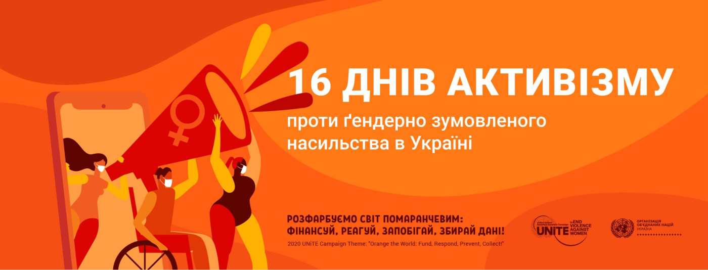

16 Днів проти насильства
З 1991 року акцію "16 днів активізму проти насильства" підтримують
у 100
країнах
світу, щоб збільшити розуміння та поінформованість про
всі форми насильства та створити
соціальний
простір, вільний від насильства
Насильство може бути економічним, сексуальним, фізичним, психологічним.
І щоб
подолати
будь-яку з його форм, варто почати говорити та звертатися
за допомогою. Для постраждалих це
непростий
крок, часом вони вирішуються
на це роками… Тому якщо у вашому оточенні є такі люди — підтримайте
їх.
Насильство не повинно залишатися за зачиненими дверима на перший
погляд безпечного будинку.
Аб'юзери не
зупиняються після щирого каяття,
а продовжують здійснювати насильство.
- Відеоролик "Розкажи
дорослому, якому довіряєш"
щодо попередження
сексуального насильства щодо дітей у колі довіри - Буклет "Дізнайся про свої права
у цифровому середовищі" з
рекомендаціями Ради Європи
щодо поваги, захисту та
здійснення прав дитини у
цифровому середовищі для дітей та молоді - Відеоролик "Почни говорити"
для дітей та дорослих щодо
попередження сексуальних домагань у спорті